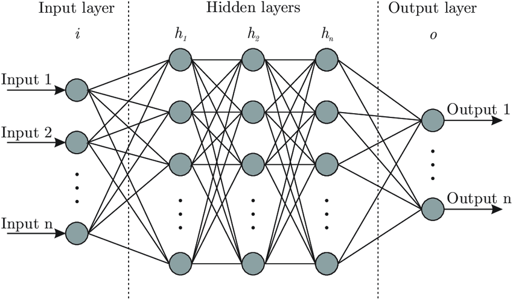
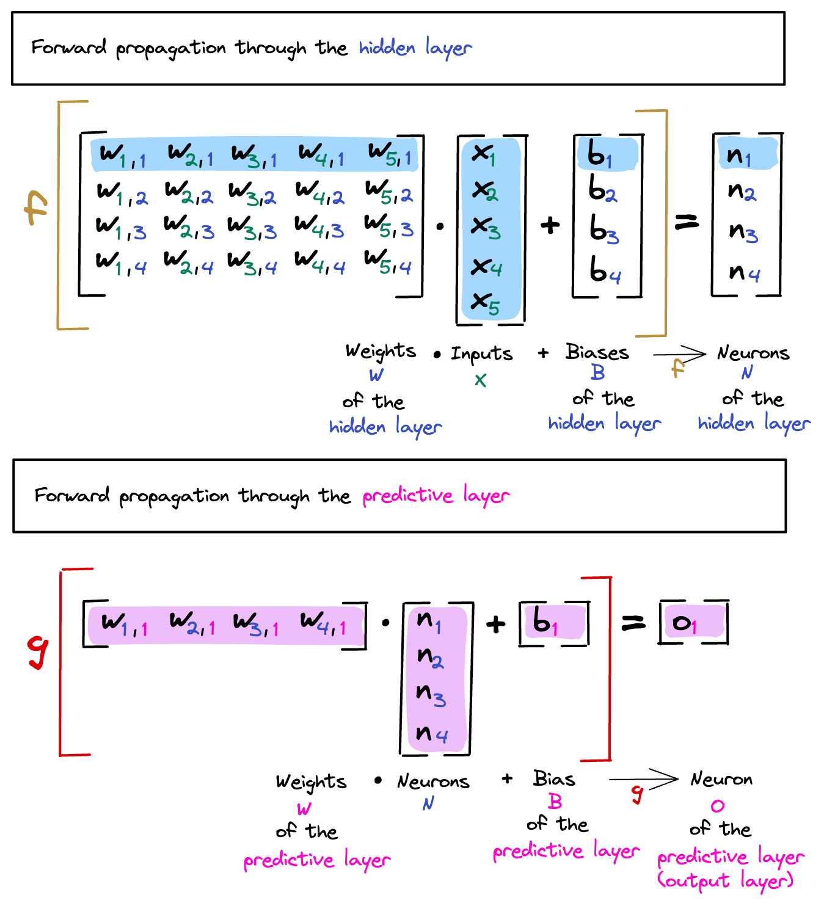
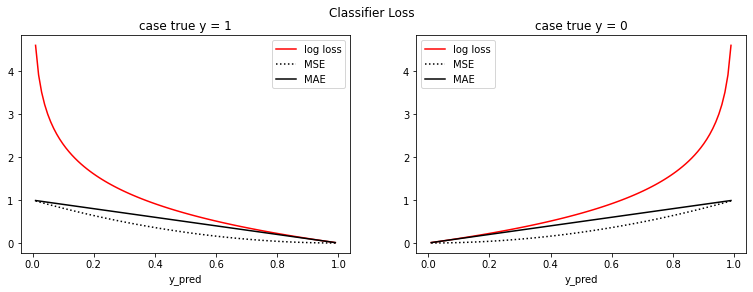
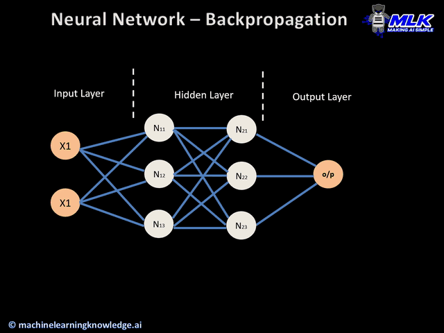
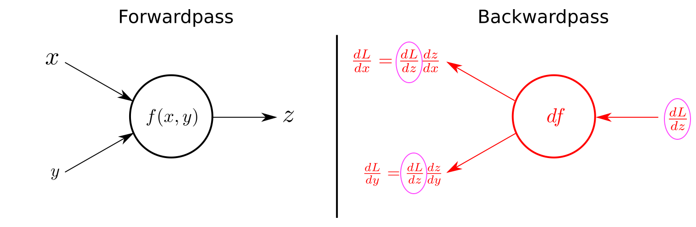
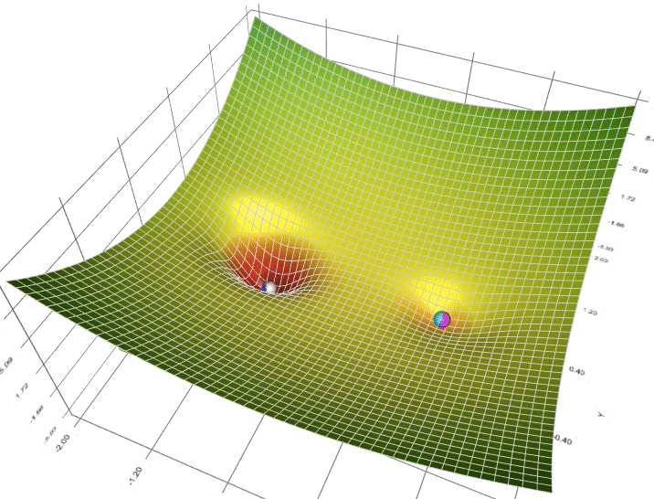
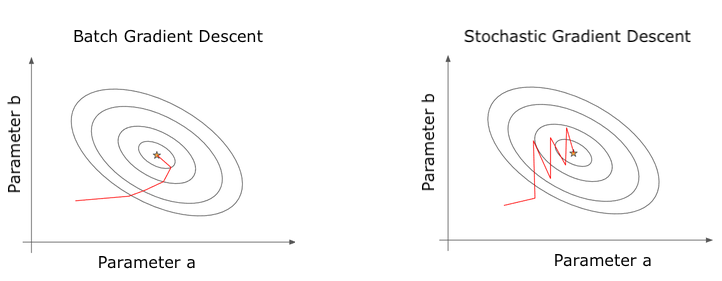
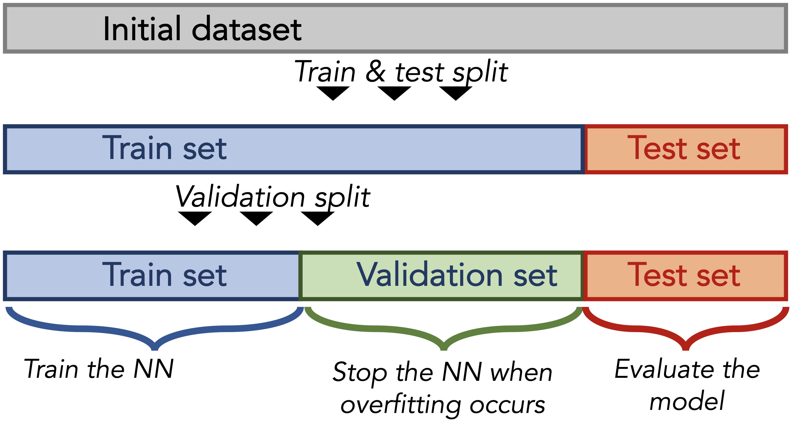
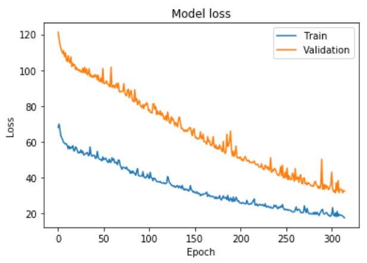
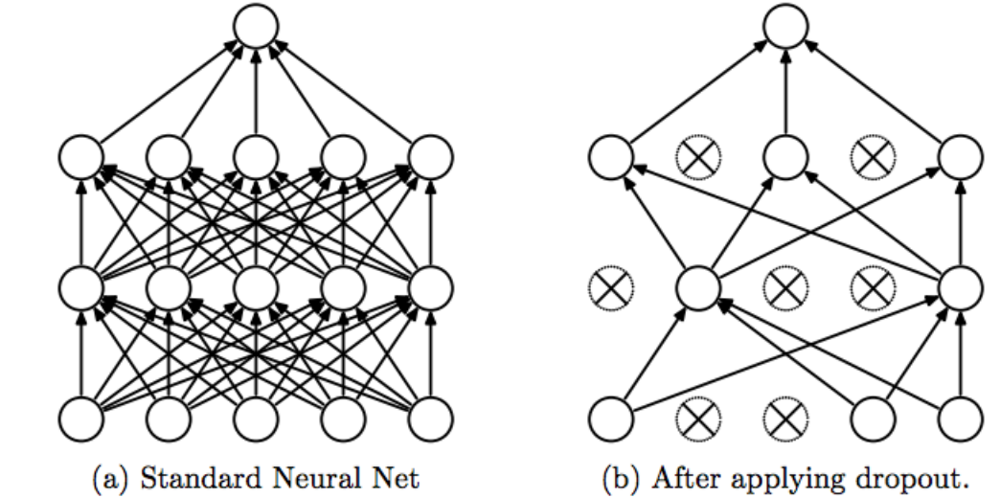

Optimizer, Loss & Fitting
Comprendre le fonctionnement interne de l'entraînement d'un réseau de neurones — loss function, optimizer, backpropagation, batch/epochs, early stopping, régularisation (L1/L2/Dropout) — et savoir configurer `model.compile()` et `model.fit()` en Keras.
📋 Cheatsheet — Optimizer, Loss & Fitting
Compiler le modèle
## Régression
model.compile(
loss='mse', # Mean Squared Error
optimizer='adam', # optimiseur par défaut recommandé
metrics=['mae'] # métrique humaine affichée à chaque epoch
)
## Classification binaire (2 classes)
model.compile(
loss='binary_crossentropy', # log loss pour sortie sigmoid
optimizer='adam',
metrics=['accuracy']
)
## Classification multi-classes (>2 classes)
model.compile(
loss='categorical_crossentropy', # pour sortie softmax (one-hot encoded y)
optimizer='adam',
metrics=['accuracy', 'precision']
)Configurer l'optimizer manuellement
import tensorflow as tf
opt = tf.keras.optimizers.Adam(
learning_rate=0.01, # taux d'apprentissage (défaut 0.001)
beta_1=0.9, # momentum (défaut 0.9)
beta_2=0.999 # scaling adaptatif (défaut 0.999)
)
model.compile(loss='mse', optimizer=opt)Entraîner avec validation split
history = model.fit(
X_train, y_train,
validation_split=0.3, # 30% derniers index pour validation
batch_size=32, # taille du mini-batch
epochs=1000, # sera coupé par l'early stopping
callbacks=[es] # liste de callbacks
)Entraîner avec validation data explicite
history = model.fit(
X_train, y_train,
validation_data=(X_val, y_val), # données de validation explicites
batch_size=16,
epochs=100
)Early Stopping
from tensorflow.keras.callbacks import EarlyStopping
es = EarlyStopping(
patience=20, # attend 20 epochs sans amélioration
restore_best_weights=True # restaure les poids du meilleur epoch
)
model.fit(X_train, y_train,
validation_split=0.3,
epochs=1000,
callbacks=[es]) # callback appelé à la fin de chaque epochRégularisation L1 / L2
from keras import regularizers
reg_l1 = regularizers.L1(0.01) # pousse les poids vers 0 (sparsité)
reg_l2 = regularizers.L2(0.01) # garde les poids petits
reg_l1_l2 = regularizers.l1_l2(l1=0.005, l2=0.0005) # combinaison des deux
## Appliquer sur les poids d'une couche
layers.Dense(50, activation='relu', kernel_regularizer=reg_l2)
## Appliquer sur les biais (rare)
layers.Dense(20, activation='relu', bias_regularizer=reg_l2)
## Appliquer sur la sortie de la couche (sparsité des activations)
layers.Dense(10, activation='relu', activity_regularizer=reg_l1)Dropout
from keras import layers
model.add(layers.Dense(20, activation='relu'))
model.add(layers.Dropout(rate=0.2)) # désactive 20% des neurones aléatoirement
model.add(layers.Dense(10, activation='relu'))
model.add(layers.Dropout(rate=0.2))
model.add(layers.Dense(1, activation='sigmoid'))
## ⚠️ Dropout n'ajoute AUCUN paramètre supplémentairePreprocessing intégré (Normalization layer)
from tensorflow.keras.layers import Normalization
normalizer = Normalization() # instancie la couche
normalizer.adapt(X_train) # "fit" sur le train set
model = Sequential()
model.add(normalizer) # première couche = normalisation
model.add(layers.Dense(16, activation='relu'))
model.add(layers.Dense(1, activation='linear'))
## Plus besoin de scaler manuellement avec StandardScaler !Sauvegarder / Charger un modèle
from tensorflow.keras import models
models.save_model(model, 'my_model.keras') # sauvegarde le modèle
loaded_model = models.load_model('my_model.keras') # charge le modèle
## ⚠️ Format .keras requiert tensorflow>=2.16 / keras>=3Métriques et losses personnalisées
import tensorflow as tf
## Métrique personnalisée
def custom_mse(y_true, y_pred):
squared_diff = tf.square(y_true - y_pred) # différence au carré
return tf.reduce_mean(squared_diff) # moyenne
model.compile(loss=custom_mse, optimizer='adam', metrics=[custom_mse])
## Métrique Keras fine-tunable
auc = tf.keras.metrics.AUC(num_thresholds=200, curve='ROC')
model.compile(loss='binary_crossentropy', metrics=[auc])⚠️ Récapitulatif — Erreurs clés à éviter
Utiliser l'accuracy comme loss function
❌ L'accuracy n'est pas dérivable → impossible de calculer un gradient
python
model.compile(loss='accuracy', optimizer='adam') # ❌ "accuracy" n'est pas une loss !
✅ Utiliser une loss lisse (dérivable) et mettre l'accuracy en métrique
python
model.compile(loss='binary_crossentropy', optimizer='adam', metrics=['accuracy'])
Utiliser le test set pour décider quand arrêter l'entraînement
❌ validation_data=(X_test, y_test) → data leakage, le test set influence l'optimisation
python
model.fit(X_train, y_train, validation_data=(X_test, y_test)) # ❌ leakage !
✅ Utiliser un vrai validation set séparé ou validation_split
python
model.fit(X_train, y_train, validation_split=0.3) # ✅ 30% du train pour validation
Oublier restore_best_weights=True dans l'Early Stopping
❌ Sans cette option, le modèle conserve les poids du dernier epoch (potentiellement overfitté)
python
es = EarlyStopping(patience=20) # restaure les poids de l'epoch final, pas le meilleur
✅ Toujours restaurer les meilleurs poids
python
es = EarlyStopping(patience=20, restore_best_weights=True)
Régulariser avant de vérifier que le modèle peut overfitter
❌ Ajouter Dropout + L2 dès le départ → le modèle n'apprend rien
python
model.add(layers.Dense(50, kernel_regularizer=regularizers.L2(0.1)))
model.add(layers.Dropout(0.5)) # trop de régularisation dès le début
✅ D'abord construire un modèle simple qui overfit, puis ajouter de la régularisation progressivement
python
# 1) Vérifier que le modèle overfit (bon signe : il apprend)
# 2) Ajouter Early Stopping
# 3) Ajouter Dropout/L2 si nécessaire
Ne pas standardiser les features avant l'entraînement
❌ Des features sur des échelles différentes → convergence lente ou échec
python
model.fit(X_train_raw, y_train) # feature 4 est 100× plus grande que les autres
✅ Standardiser avec StandardScaler ou la couche Normalization de Keras
python
normalizer = Normalization()
normalizer.adapt(X_train)
model.add(normalizer) # intégré dans l'architecture
0) Rappels
0.1 Architecture d'un réseau de neurones
Un réseau de neurones est un empilement de couches. Chaque couche est composée de neurones = combinaison linéaire + fonction d'activation.

0.2 Les 3 étapes Keras
from keras import Sequential, layers, Input
## 1. Architecture
model = Sequential()
model.add(Input(shape=(128,)))
model.add(layers.Dense(100, activation='relu'))
model.add(layers.Dense(10, activation='relu'))
model.add(layers.Dense(5, activation='softmax'))
## 2. Compilation (loss + optimizer)
model.compile(loss='categorical_crossentropy', optimizer='adam')
## 3. Entraînement
model.fit(X, y, batch_size=32, epochs=100)1) Compiling : model.compile(...)
model.compile(loss=..., optimizer=..., metrics=...)Le compile définit comment le réseau optimise ses paramètres $\theta$ :
- loss = fonction lisse à minimiser (optimise $theta$)
- optimizer = algorithme de mise à jour de $\theta$
- metrics = mesures humaines de performance (ne sert pas à l'optimisation)
1.1 Les métriques
Les métriques mesurent la qualité des prédictions de manière interprétable. Elles sont calculées par forward propagation à chaque epoch.
Forward propagation = pour un input $X$, le modèle calcule $\hat{y} = f_\theta(X)$ via une multiplication matricielle par couche.

| Tâche | Métriques classiques |
|---|---|
| Régression | MSE, MAE, RMSE, RMSLE, R² |
## Avec des strings (accès rapide)
model.compile(metrics=['accuracy', 'precision'])
## Avec des objets Keras (fine-tuning)
auc = tf.keras.metrics.AUC(num_thresholds=200, curve='ROC')
model.compile(metrics=[auc])
## Métrique personnalisée
def custom_mse(y_true, y_pred):
return tf.reduce_mean(tf.square(y_true - y_pred))
model.compile(metrics=[custom_mse])1.2 La loss function $L_X(\theta)$
La loss est la fonction que .fit() cherche à minimiser. Caractéristiques :
- Différente de la métrique (la loss doit être lisse/dérivable)
- Une seule loss par modèle (mais plusieurs métriques possibles)
- Doit être continue et (sous-)différentiable par rapport à $\theta$
Pourquoi l'accuracy ne peut pas être une loss ? Parce qu'elle saute de 0 à 1 quand $\theta$ varie → pas de gradient exploitable. Les cross-entropies, en revanche, produisent des probabilités qui varient continûment.

Binary Cross-Entropy (Log Loss)
$\text{Log Loss} = -\frac{1}{n}\sum_{i=0}^{n} \left[ y_i \log(\hat{y}_i) + (1 - y_i)\log(1 - \hat{y}_i) \right]$
- Si $y = 1$ → $\text{Loss} = -\log(\hat{y})$ → pénalise les $\hat{y}$ proches de 0
- Si $y = 0$ → $\text{Loss} = -\log(1 - \hat{y})$ → pénalise les $\hat{y}$ proches de 1

## Avec un string
model.compile(loss='binary_crossentropy')
## Avec un objet Keras
loss = tf.keras.losses.BinaryCrossentropy()
model.compile(loss=loss)
## Loss personnalisée
def custom_mse(y_true, y_pred):
return tf.reduce_mean(tf.square(y_true - y_pred))
model.compile(loss=custom_mse)2) L'optimizer
L'optimizer met à jour les poids $\theta$ du modèle en utilisant le gradient de la loss.

2.1 Forward vs. Backward Propagation
À chaque itération $k$, sur un mini-batch :
- Forward propagation : calcul de $f_{\theta_k}(X_{\text{batch}})$ puis de la loss $L(\theta_k)$
- Backward propagation : calcul du gradient $\nabla L$ puis mise à jour des poids : $\theta_{k+1} \leftarrow \text{Update}(\theta_k, \nabla L)$
Pourquoi « backpropagation » ?
Le gradient $\nabla L(\theta)$ contient $p$ dérivées partielles (une par poids) :
$\nabla L(\theta) = \begin{bmatrix} \frac{\partial L}{\partial \theta_1} \\ \vdots \\ \frac{\partial L}{\partial \theta_p} \end{bmatrix}$
Calculer chaque dérivée numériquement ($frac{L(theta_i + h) - L(theta_i)}{h}$) nécessiterait $p$ forward passes → beaucoup trop lent.
La Chain Rule permet de calculer analytiquement toutes les dérivées en un seul backward pass, en réutilisant les calculs intermédiaires stockés lors du forward pass. Un backward pass prend environ le même temps qu'un forward pass.

Vanishing Gradient : les poids des premières couches (profondes) sont plus difficiles à mettre à jour que ceux des dernières couches (proches de la sortie). C'est un problème fondamental des réseaux profonds.
2.2 Quel optimizer choisir ?
Le gradient descent simple se bloque facilement dans des minima locaux. Les optimizers modernes ajoutent des mécanismes pour en sortir :
| Optimizer | Particularité | SGD | Gradient descent de base |
|---|---|---|---|
| Momentum | Ajoute de l'inertie (accélère dans la bonne direction) | AdaGrad | Learning rate adaptatif par feature |
| RMSProp | Ajoute un decay (seuls les gradients récents comptent) | Adam | Combine tout — meilleur choix par défaut |

Adam = toujours commencer par Adam. 👉 Keras optimizers — docs
3) Hyperparamètres de l'optimizer
3.1 Learning Rate
Le learning rate contrôle l'amplitude de la mise à jour des poids à chaque itération.

- Trop grand → le modèle diverge
- Trop petit → convergence très lente, nécessite beaucoup plus d'epochs
- Commencer avec le défaut d'Adam (
0.001)
Les schedulers permettent de faire varier le learning rate pendant l'entraînement. 👉 Keras schedulers — docs
3.2 Batch Size
Avec 100 samples et batch_size=10, une epoch = 10 mises à jour des poids.

| Petit batch | Grand batch | Plus stochastique | Plus stable |
|---|---|---|---|
| Convergence potentiellement plus rapide | Meilleure généralisation | Moins coûteux en mémoire | Plus coûteux en calcul |
En pratique : 16 ou 32 pour des données réelles (images, texte). Plus pour des petits datasets tabulaires. Toujours une puissance de 2 (raisons computationnelles).
3.3 Nombre d'epochs
Le nombre d'epochs n'est pas un hyperparamètre à régler finement : on met un nombre grand (ex: 1000) et on laisse l'Early Stopping décider quand arrêter.
Plus le batch size est grand, plus il faudra d'epochs pour convergence.
3.4 Train / Validation / Test Split
Pour savoir quand le modèle commence à overfitter, on évalue sur un validation set (et non le test set !) :

## Option 1 : validation_data explicite
history = model.fit(X_train, y_train,
validation_data=(X_val, y_val),
batch_size=16, epochs=100)
## Option 2 : validation_split automatique
history = model.fit(X_train, y_train,
validation_split=0.3, # derniers 30% des index (avant shuffle)
batch_size=16, epochs=100)Le validation_split se fait avant le shuffle de chaque epoch → pas de data leakage.
3.5 Early Stopping
L'Early Stopping arrête l'entraînement quand la validation loss ne s'améliore plus.
from tensorflow.keras.callbacks import EarlyStopping
## Basique : arrête dès que la val loss augmente
es = EarlyStopping()
## Avec patience : attend N epochs sans amélioration
es = EarlyStopping(patience=20)
## Avec restauration des meilleurs poids ✅
es = EarlyStopping(patience=20, restore_best_weights=True)
model.fit(X_train, y_train,
validation_split=0.3,
epochs=1000,
callbacks=[es])
Sans patience, le modèle s'arrête trop tôt à cause de la nature stochastique de la loss. Avec patience=20, on tolère 20 epochs sans amélioration avant de stopper.
4) Régularisation
La régularisation empêche le modèle d'overfitter. À appliquer après avoir vérifié que le modèle est capable d'overfitter (= il apprend).
4.1 Régularisation L1 / L2
Fonctionne comme en ML classique : ajoute un terme de pénalité à la loss.
- L1 : $\text{Loss}_{\text{reg}} = \text{Loss} + \alpha \sum_i |\theta_i|$ → pousse les poids vers 0 (sparsité)
- L2 : $\text{Loss}_{\text{reg}} = \text{Loss} + \alpha \sum_i \theta_i^2$ → garde les poids petits
La régularisation se définit couche par couche :
| Paramètre | Cible | Usage | kernel_regularizer | Poids $W$ de la couche | Le plus courant — équivalent de la régularisation en régression linéaire |
|---|---|---|---|---|---|
bias_regularizer | Biais $b$ de la couche | Rarement utilisé | activity_regularizer | Sortie $f(W \cdot X + b)$ | Rend la sortie sparse — utile pour auto-encoders |
from keras import regularizers, Sequential, Input, layers
reg_l2 = regularizers.L2(0.01)
model = Sequential()
model.add(Input(shape=(3,)))
model.add(layers.Dense(100, activation='relu'))
model.add(layers.Dense(50, activation='relu', kernel_regularizer=reg_l2)) # L2 sur les poids
model.add(layers.Dense(1, activation='sigmoid'))La régularisation n'ajoute aucun paramètre supplémentaire au modèle. Elle modifie uniquement la loss optimisée.
4.2 Dropout
Le Dropout désactive aléatoirement un pourcentage de neurones à chaque itération pendant l'entraînement. Cela empêche les neurones de se sur-spécialiser.

model = Sequential()
model.add(Input(shape=(56,)))
model.add(layers.Dense(20, activation='relu'))
model.add(layers.Dropout(rate=0.2)) # désactive 20% des neurones aléatoirement
model.add(layers.Dense(10, activation='relu'))
model.add(layers.Dropout(rate=0.2))
model.add(layers.Dense(3, activation='softmax'))Le Dropout n'ajoute aucun paramètre supplémentaire. Il est désactivé automatiquement lors du predict().
5) Preprocessing intégré dans TensorFlow
5.1 Le problème : features mal scalées
Des features sur des échelles très différentes ralentissent ou empêchent la convergence.
5.2 Option 1 — Scaler externe (StandardScaler)
from sklearn.preprocessing import StandardScaler
scaler = StandardScaler()
X_train_scaled = scaler.fit_transform(X_train) # fit + transform sur le train
X_test_scaled = scaler.transform(X_test) # transform seulement sur le test
model.fit(X_train_scaled, y_train, validation_data=(X_test_scaled, y_test))5.3 Option 2 — Normalization layer intégrée (recommandée)
from tensorflow.keras.layers import Normalization
normalizer = Normalization()
normalizer.adapt(X_train) # "fit" la normalisation sur le train
model = Sequential()
model.add(normalizer) # 1ère couche = normalisation automatique
model.add(layers.Dense(16, activation='relu'))
model.add(layers.Dense(3, activation='linear'))
## Plus besoin de scaler X_train ou X_test manuellement !
model.fit(X_train, y_train, validation_data=(X_test, y_test))Autres couches de preprocessing disponibles : CategoryEncoding (OneHotEncoder), TextVectorization (NLP), Resizing (images). 👉 Liste complète
6) Sauvegarder et charger des modèles
from tensorflow.keras import models
## Sauvegarder
models.save_model(model, 'my_model.keras')
## Charger
loaded_model = models.load_model('my_model.keras')
## Le modèle chargé est prêt à predict sans ré-entraînement
loaded_model.predict(X_new)Le format .keras nécessite tensorflow>=2.16 / keras>=3. Les anciens modèles (sans .keras) ne sont pas compatibles.
7) Pro Tips
Workflow recommandé :
1. Commencer par la dernière couche (dictée par la tâche)
2. Implémenter l'architecture la plus simple possible
3. Fixer le batch_size (32 par défaut) et ne pas y toucher au début
4. Mettre beaucoup d'epochs + Early Stopping → le modèle décide quand s'arrêter
5. D'abord faire overfitter le modèle (signe qu'il apprend)
6. Si le modèle n'overfit pas → ajuster le learning rate ou changer l'architecture
7. Si le train loss descendait encore au moment de l'early stopping → la régularisation peut aider
8. Régulariser les dernières couches d'abord avant les premières
Bibliographie
- 👉 Keras optimizers — docs
- 👉 Keras losses — docs
- 👉 Keras metrics — docs
- 👉 Keras preprocessing layers
- 👉 In what sense is backprop a fast algorithm
- 👉 3Blue1Brown — Neural Networks (1h)
- 👉 Stanford — Graphs and Backpropagation (1h20)
- 👉 Khan Academy — Chain Rule (5 min)
- 👉 Visual explanation of gradient descent methods
- 👉 Distill — Why Momentum Really Works
Challenges
Configurer et entraîner des réseaux Keras avec différentes loss, optimizers, early stopping, régularisation L2/Dropout, et preprocessing intégré (Normalization layer).
- 🧭 Introduction
- 1. Les 3 étapes Keras : architecture, compilation, entraînement
- 2. `model.compile()` — Choisir la loss, l'optimizer et les métriques
- 3. La Loss Function — mesurer l'erreur du modèle
- 4. L'Optimizer — comment le modèle apprend
- 5. Les Hyperparamètres de l'entraînement
- 6. Validation Set et Early Stopping
- 7. Régularisation — éviter le surapprentissage
- 8. Preprocessing intégré dans Keras
- 9. Sauvegarder et charger un modèle
- 10. Récapitulatif — Les erreurs classiques à éviter
- 🎯 Questions de vérification
- 📌 TL;DR
🧭 Introduction
Contexte : de quoi parle-t-on ?
Quand tu entraînes un réseau de neurones, il se passe trois choses en boucle :
- Le modèle fait une prédiction (forward pass)
- On mesure à quel point il s'est trompé (loss function)
- On corrige ses paramètres pour qu'il se trompe moins la prochaine fois (optimizer)
Ce cours couvre exactement ces trois étapes, plus les outils pour contrôler l'entraînement : le batch size, le nombre d'epochs, l'early stopping, et la régularisation.
Les 5 points à retenir avant de commencer
- La loss function est la mesure d'erreur que le modèle cherche à minimiser — elle doit être mathématiquement "lisse" (dérivable).
- L'optimizer (Adam par défaut) décide comment modifier les poids à chaque étape.
- Un epoch = une passe complète sur tout le dataset d'entraînement.
- Le batch size contrôle combien d'exemples on regarde avant de mettre à jour les poids.
- L'early stopping arrête l'entraînement automatiquement quand le modèle commence à mémoriser au lieu d'apprendre.
L'analogie fil rouge : la randonnée en montagne
Imagine que tu es dans un brouillard épais sur une montagne, et que tu cherches le point le plus bas (la vallée). Tu ne vois pas loin, mais tu peux sentir la pente sous tes pieds.
- La montagne = le paysage de la loss function (toutes les valeurs possibles d'erreur)
- Toi = les paramètres $\theta$ du modèle
- Descendre vers la vallée = minimiser la loss
- Regarder la pente = calculer le gradient
- Faire un pas = mise à jour des poids par l'optimizer
- La taille de ton pas = le learning rate
- S'arrêter quand tu n'avances plus = early stopping
Cette analogie reviendra tout au long du cours.
Mini-plan du cours
model.compile()— choisir la loss, l'optimizer et les métriques- La loss function en détail — MSE et Cross-Entropy
- L'optimizer — comment il met à jour les poids (gradient, backpropagation)
- Les hyperparamètres — learning rate, batch size, epochs
- L'early stopping et le validation set
- La régularisation — L1/L2 et Dropout
- Le preprocessing intégré
- Sauvegarder et charger un modèle
1. Les 3 étapes Keras : architecture, compilation, entraînement
Avant d'entrer dans les détails, voici la structure de base d'un modèle Keras. Tout tourne autour de ces trois blocs.
from keras import Sequential, layers, Input
# --- Etape 1 : définir l'architecture ---
model = Sequential()
model.add(Input(shape=(128,))) # 128 features en entrée
model.add(layers.Dense(100, activation='relu')) # couche cachée avec 100 neurones
model.add(layers.Dense(10, activation='relu')) # couche cachée avec 10 neurones
model.add(layers.Dense(5, activation='softmax')) # 5 classes en sortie
# --- Etape 2 : compiler (choisir loss + optimizer) ---
model.compile(loss='categorical_crossentropy', optimizer='adam')
# --- Etape 3 : entraîner ---
model.fit(X, y, batch_size=32, epochs=100)Retenir l'ordre : Architecture → Compilation → Entraînement. On ne peut pas entraîner un modèle non compilé, et on ne peut pas compiler un modèle sans architecture.
2. model.compile() — Choisir la loss, l'optimizer et les métriques
La signature de compile
model.compile(
loss=..., # ce que le modèle minimise
optimizer=..., # comment il met à jour ses poids
metrics=[...] # ce qu'on affiche pour se repérer (ne sert PAS à l'optimisation)
)Quelle loss pour quelle tâche ?
| Tâche | Loss recommandée | Activation de sortie |
|---|---|---|
| Régression | 'mse' (Mean Squared Error) | 'linear' |
| Classification binaire (2 classes) | 'binary_crossentropy' | 'sigmoid' |
| Classification multi-classes (>2) | 'categorical_crossentropy' | 'softmax' |
# Régression : prédire un prix, une température, etc.
model.compile(
loss='mse', # erreur quadratique moyenne
optimizer='adam', # optimiseur par défaut
metrics=['mae'] # MAE affiché pour avoir une idée de l'erreur en valeur absolue
)
# Classification binaire : spam/pas spam, malade/sain, etc.
model.compile(
loss='binary_crossentropy', # log loss pour 2 classes
optimizer='adam',
metrics=['accuracy'] # % de bonnes prédictions affiché
)
# Classification multi-classes : chien/chat/oiseau, etc.
model.compile(
loss='categorical_crossentropy', # pour une sortie softmax
optimizer='adam',
metrics=['accuracy']
)Loss ≠ Métrique. La loss doit être mathématiquement "lisse" (dérivable) pour que l'optimizer puisse calculer un gradient. L'accuracy, elle, "saute" de 0 à 1 d'un coup — impossible d'en calculer une pente. On la met en metrics pour l'affichage, jamais en loss.
# FAUX — ne pas faire ça
model.compile(loss='accuracy', optimizer='adam') # erreur !
# CORRECT
model.compile(loss='binary_crossentropy', optimizer='adam', metrics=['accuracy'])3. La Loss Function — mesurer l'erreur du modèle
Qu'est-ce qu'une loss function ?
C'est une fonction mathématique qui prend en entrée les prédictions du modèle $\hat{y}$ et les vraies valeurs $y$, et qui retourne un nombre positif : plus ce nombre est grand, plus le modèle s'est trompé.
L'entraînement consiste à faire descendre ce nombre vers zéro. Comme dans notre analogie : descendre vers la vallée.
3.1 La MSE — Mean Squared Error (Régression)
Formule :
Traduction en français : Pour chaque exemple $i$, on calcule la différence entre la vraie valeur $y_i$ et la prédiction $\hat{y}_i$, on la met au carré (pour éviter les annulations entre erreurs positives et négatives), et on fait la moyenne sur tous les $n$ exemples.
Exemple numérique : Ton modèle doit prédire des températures.
| Exemple | Vraie valeur $y_i$ | Prédiction $\hat{y}_i$ | Erreur $(y_i - \hat{y}_i)$ | Erreur² |
|---|---|---|---|---|
| 1 | 20°C | 18°C | 2 | 4 |
| 2 | 25°C | 27°C | -2 | 4 |
| 3 | 15°C | 14°C | 1 | 1 |
L'erreur quadratique moyenne est de 3°C². Si tu veux une erreur en degrés directement, utilise la MAE (Mean Absolute Error) ou la RMSE (racine carrée de la MSE = $\sqrt{3} \approx 1.73$°C).
Pourquoi mettre au carré ? Deux raisons : (1) les erreurs positives et négatives ne s'annulent pas, (2) les grosses erreurs sont pénalisées beaucoup plus fort que les petites (une erreur de 4 donne 16, une erreur de 2 donne 4).
3.2 La Binary Cross-Entropy (Classification binaire)
Formule :
Décomposons : Le modèle prédit une probabilité $\hat{y}_i \in [0, 1]$ (grâce à la fonction sigmoid en sortie). La vraie étiquette $y_i$ est 0 ou 1.
- Si $y_i = 1$ (c'est positif), la loss vaut $-\log(\hat{y}_i)$. Si le modèle dit $\hat{y}_i = 0.9$ (confiant et correct) → loss = $-\log(0.9) \approx 0.1$ (faible). Si $\hat{y}_i = 0.1$ (confiant et faux) → loss = $-\log(0.1) \approx 2.3$ (forte pénalité).
- Si $y_i = 0$ (c'est négatif), la loss vaut $-\log(1 - \hat{y}_i)$. Même logique inversée.
Exemple numérique : Détection de spam (1 = spam, 0 = pas spam).
| Vraie étiquette $y_i$ | Probabilité prédite $\hat{y}_i$ | Contribution à la loss | |
|---|---|---|---|
| A | 1 (spam) | 0.9 | $-\log(0.9) \approx 0.105$ |
| B | 1 (spam) | 0.2 | $-\log(0.2) \approx 1.609$ |
| C | 0 (pas spam) | 0.1 | $-\log(0.9) \approx 0.105$ |
L'email B est mal prédit (vrai spam prédit à seulement 20%) et contribue beaucoup à la loss.
La cross-entropy punit très fortement les prédictions confiantes mais fausses. C'est le comportement voulu : si tu affirmes "0% de chance que ce soit un cancer" et que c'en est un, tu mérites une grosse pénalité.
4. L'Optimizer — comment le modèle apprend
4.1 Forward et Backward Propagation
À chaque itération (sur un mini-batch de données), deux étapes se succèdent :
1. Forward propagation (aller) : le modèle calcule sa prédiction $\hat{y}$ à partir des entrées $X$, puis on calcule la loss.
2. Backward propagation (retour) : on calcule le gradient de la loss par rapport à chaque poids — c'est la "direction de la pente" sous nos pieds dans l'analogie montagne — puis on met à jour les poids.
La mise à jour des poids suit cette règle (gradient descent simple) :
Traduction : Le nouveau poids $\theta_{k+1}$ = l'ancien poids $\theta_k$ moins le learning rate $\alpha$ multiplié par la pente (gradient $\nabla L$). On descend dans la direction de la pente, avec un pas de taille $\alpha$.
Exemple numérique simple :
Un poids vaut $\theta = 2.0$. La pente (gradient) calculée est $\nabla L = 0.5$. Le learning rate est $\alpha = 0.1$.
Le poids a diminué légèrement dans la direction qui réduit la loss.
4.2 Le gradient — qu'est-ce que c'est exactement ?
Un réseau de neurones peut avoir des millions de poids $\theta_1, \theta_2, \dots, \theta_p$. Le gradient est un vecteur de toutes les dérivées partielles :
Chaque composante indique : "si j'augmente ce poids de très peu, la loss augmente ou diminue de combien ?"
Pourquoi "back"-propagation ? Calculer ces millions de dérivées une par une serait catastrophiquement lent. La rétropropagation utilise la règle de la chaîne (chain rule) pour les calculer toutes en une seule passe arrière, en réutilisant les calculs du forward pass. Un backward pass prend environ le même temps qu'un forward pass — c'est un algorithme très efficace.
Vanishing Gradient : Dans les réseaux très profonds, les gradients peuvent devenir extrêmement petits en remontant vers les premières couches. Résultat : les premières couches n'apprennent presque plus. C'est un problème fondamental que les architectures modernes (BatchNorm, ResNet, etc.) cherchent à résoudre.
4.3 Quel optimizer choisir ?
Le gradient descent "de base" (SGD) a un problème : il peut se bloquer dans des minima locaux (des petites vallées qui ne sont pas la vraie vallée la plus profonde). Les optimizers modernes ajoutent des mécanismes pour mieux naviguer :
| Optimizer | Ce qu'il ajoute |
|---|---|
| SGD | Gradient descent de base — simple mais limité |
| Momentum | Inertie : accélère dans la bonne direction (comme une boule qui roule) |
| AdaGrad | Learning rate différent par paramètre — s'adapte à l'importance de chaque feature |
| RMSProp | Comme AdaGrad mais seuls les gradients récents comptent |
| Adam | Combine Momentum + RMSProp — le meilleur des deux mondes |
Règle simple : toujours commencer par Adam. Il converge vite, s'adapte à chaque paramètre, et est robuste dans la plupart des situations. Tu n'as presque jamais besoin de changer.
import tensorflow as tf
# Utiliser Adam avec les paramètres par défaut (recommandé pour commencer)
model.compile(loss='mse', optimizer='adam')
# Si tu veux ajuster le learning rate manuellement
opt = tf.keras.optimizers.Adam(
learning_rate=0.01, # défaut : 0.001 — augmenter si convergence trop lente
beta_1=0.9, # momentum — rarement à changer
beta_2=0.999 # scaling adaptatif — rarement à changer
)
model.compile(loss='mse', optimizer=opt)5. Les Hyperparamètres de l'entraînement
5.1 Le Learning Rate — la taille du pas
Le learning rate $\alpha$ contrôle de combien on modifie les poids à chaque mise à jour.
- Trop grand ($\alpha = 1.0$) : les poids changent trop brutalement, le modèle "saute" par-dessus la vallée et diverge (la loss monte au lieu de descendre).
- Trop petit ($\alpha = 0.000001$) : les poids changent très peu, le modèle converge très lentement et il faut des milliers d'epochs.
- Bien calibré ($\alpha = 0.001$ pour Adam) : descente régulière et efficace.
Valeur de départ recommandée : 0.001 avec Adam. C'est la valeur par défaut et elle fonctionne bien dans 80% des cas. Si la loss ne bouge pas, essaie 0.01. Si elle diverge, essaie 0.0001.
5.2 Le Batch Size — combien d'exemples par mise à jour
Au lieu de regarder tous les exemples avant de faire une mise à jour des poids (trop lent), on découpe le dataset en mini-batches et on met à jour les poids après chaque mini-batch.
Exemple concret : 1000 exemples d'entraînement, batch_size=100.
- 1 epoch = 10 mini-batches = 10 mises à jour des poids.
| Petit batch (16-32) | Grand batch (256-512) | |
|---|---|---|
| Mises à jour par epoch | Beaucoup | Peu |
| Qualité du gradient | Bruitée (stochastique) | Stable |
| Vitesse de convergence | Souvent plus rapide | Peut nécessiter plus d'epochs |
| Mémoire utilisée | Peu | Beaucoup |
En pratique : 32 est un excellent point de départ. Toujours choisir une puissance de 2 (16, 32, 64, 128...) pour des raisons de performance GPU. Pour de petits datasets tabulaires, tu peux aller jusqu'à 256 sans problème.
history = model.fit(
X_train, y_train,
batch_size=32, # 32 exemples par mise à jour
epochs=100
)5.3 Le Nombre d'Epochs — combien de fois on voit tout le dataset
Un epoch = le modèle a vu une fois chaque exemple du dataset d'entraînement.
En pratique, on met un grand nombre d'epochs (ex: 1000) et on laisse l'Early Stopping décider quand arrêter. Il n'y a pas de règle magique pour le nombre d'epochs.
Plus le batch size est grand, plus il faut d'epochs pour que le modèle fasse autant de mises à jour totales. Avec batch_size=1000 et 1000 exemples, il n'y a qu'une seule mise à jour par epoch.
6. Validation Set et Early Stopping
6.1 Pourquoi un validation set ?
Pendant l'entraînement, le modèle voit les mêmes données encore et encore. À force, il commence à les mémoriser au lieu de vraiment apprendre (c'est l'overfitting). Pour détecter ça, on réserve une partie des données — le validation set — que le modèle ne voit jamais pendant l'entraînement. On mesure la performance dessus à chaque epoch.
Le signal d'alerte : la loss d'entraînement continue de baisser, mais la loss de validation commence à remonter. Le modèle mémorise, il n'apprend plus.
# Option 1 : séparer manuellement les données
history = model.fit(
X_train, y_train,
validation_data=(X_val, y_val), # données séparées explicitement
batch_size=32,
epochs=100
)
# Option 2 : laisser Keras séparer automatiquement
history = model.fit(
X_train, y_train,
validation_split=0.3, # les 30% derniers exemples servent de validation
batch_size=32,
epochs=100
)Ne jamais utiliser le test set comme validation set ! Si tu te sers du test set pour décider quand arrêter, tu laisses le test set influencer l'entraînement — c'est du data leakage. Le test set doit rester complètement isolé jusqu'à l'évaluation finale.
6.2 Early Stopping — arrêter au bon moment
L'Early Stopping surveille la validation loss après chaque epoch et arrête l'entraînement si elle ne s'améliore plus.
from tensorflow.keras.callbacks import EarlyStopping
es = EarlyStopping(
patience=20, # attend 20 epochs sans amélioration avant d'arrêter
restore_best_weights=True # revient aux poids du meilleur epoch
)
history = model.fit(
X_train, y_train,
validation_split=0.3,
epochs=1000, # grand nombre — l'early stopping s'occupera d'arrêter
callbacks=[es] # la liste de "surveillants" appelés après chaque epoch
)Fonctionnement de patience=20 : L'entraînement continue tant que la validation loss s'améliore. Si elle ne s'améliore pas pendant 20 epochs consécutives, l'entraînement s'arrête.
Toujours mettre restore_best_weights=True. Sans ça, le modèle garde les poids du dernier epoch — qui est potentiellement overfitté. Avec cette option, il revient aux poids de l'epoch où la validation loss était la meilleure.
Pourquoi une patience > 0 ? La loss peut fluctuer légèrement à cause du caractère aléatoire des mini-batches (stochasticité). Sans patience, le modèle s'arrêterait à la première fluctuation temporaire. patience=20 lui laisse le temps de "rebondir".
7. Régularisation — éviter le surapprentissage
C'est quoi l'overfitting, concrètement ?
Un modèle qui overfit a mémorisé les données d'entraînement au lieu d'apprendre des règles générales. Il performe très bien sur le train set, mais très mal sur des données nouvelles.
L'analogie : Étudier pour un examen en mémorisant les réponses exactes des annales, sans comprendre les concepts. Tu réussis les vieux examens, mais échoues sur de nouvelles questions.
La régularisation force le modèle à apprendre des patterns plus simples et généraux.
Règle d'or : ne pas régulariser avant d'avoir vérifié que le modèle est capable d'overfitter. Un modèle qui overfit = il apprend vraiment quelque chose. S'il n'overfit même pas, c'est qu'il n'apprend rien du tout — la régularisation ne ferait qu'aggraver la situation.
Workflow recommandé :
- Construire un modèle simple, vérifier qu'il overfit
- Ajouter l'Early Stopping
- Si l'overfitting persiste, ajouter Dropout et/ou L2
7.1 Régularisation L1 et L2
Principe : Ajouter un terme de pénalité à la loss. Ça décourage le modèle d'utiliser des poids trop grands, qui sont souvent signe de surapprentissage.
L2 (Ridge) :
Intuition : On ajoute la somme des carrés des poids à la loss. Le modèle est pénalisé s'il utilise des poids élevés → il préfère des poids petits → moins d'overfitting.
L1 (Lasso) :
Intuition : On ajoute la somme des valeurs absolues des poids. L1 pousse les poids exactement vers zéro (sparsité) → certains neurones sont complètement ignorés.
Exemple numérique avec L2 : Un poids vaut $\theta = 3.0$, $\alpha = 0.01$.
Pénalité L2 pour ce poids : $\alpha \times \theta^2 = 0.01 \times 9 = 0.09$. Ce terme s'ajoute à la loss totale, ce qui pousse l'optimizer à réduire ce poids.
from keras import regularizers, Sequential, Input, layers
# Créer un régulariseur L2
reg_l2 = regularizers.L2(0.01) # alpha = 0.01
model = Sequential()
model.add(Input(shape=(10,)))
model.add(layers.Dense(100, activation='relu'))
model.add(layers.Dense(
50,
activation='relu',
kernel_regularizer=reg_l2 # applique L2 sur les poids (W) de cette couche
))
model.add(layers.Dense(1, activation='sigmoid'))Les trois cibles possibles de la régularisation :
| Paramètre | Ce qu'il régularise | Utilisation |
|---|---|---|
kernel_regularizer | Les poids $W$ de la couche | Le plus courant |
bias_regularizer | Les biais $b$ | Rare |
activity_regularizer | La sortie de la couche $f(WX + b)$ | Auto-encoders |
La régularisation L1/L2 n'ajoute aucun paramètre au modèle. Elle modifie uniquement la fonction de loss que l'optimizer minimise. model.summary() affichera le même nombre de paramètres.
7.2 Dropout — le meilleur ami contre l'overfitting
Principe : Pendant l'entraînement, on désactive aléatoirement un pourcentage de neurones à chaque itération. Les neurones désactivés ne participent ni au forward pass ni au backward pass.
Pourquoi ça fonctionne ? Quand certains neurones sont coupés aléatoirement, les autres sont forcés d'apprendre des représentations indépendantes et robustes. Aucun neurone ne peut se "reposer" sur ses voisins.
L'analogie : Apprendre à dribbler au basket avec des coéquipiers qui disparaissent aléatoirement. Tu es forcé de maîtriser toi-même plutôt que de toujours passer la balle au même.
from keras import layers, Sequential, Input
model = Sequential()
model.add(Input(shape=(56,)))
model.add(layers.Dense(20, activation='relu'))
model.add(layers.Dropout(rate=0.2)) # désactive 20% des 20 neurones aléatoirement
model.add(layers.Dense(10, activation='relu'))
model.add(layers.Dropout(rate=0.2)) # idem pour les 10 neurones suivants
model.add(layers.Dense(1, activation='sigmoid'))Le Dropout est automatiquement désactivé lors du model.predict() ou model.evaluate(). Pendant l'inférence, tous les neurones sont actifs (mais leurs sorties sont ajustées par un facteur $1 - \text{rate}$ pour maintenir l'échelle des activations).
Le Dropout n'ajoute aucun paramètre supplémentaire au modèle. C'est juste un masque aléatoire appliqué pendant l'entraînement.
8. Preprocessing intégré dans Keras
Pourquoi normaliser les features ?
Si une feature varie entre 0 et 100 000 (ex: un salaire) et une autre entre 0 et 1 (ex: une proportion), l'optimizer aura du mal à trouver le bon learning rate pour les deux en même temps. La convergence sera lente ou instable.
La solution : ramener toutes les features à la même échelle (moyenne 0, écart-type 1).
Option 1 — StandardScaler de sklearn (approche classique)
from sklearn.preprocessing import StandardScaler
scaler = StandardScaler()
X_train_scaled = scaler.fit_transform(X_train) # calcule moyenne/std sur train, puis transforme
X_test_scaled = scaler.transform(X_test) # utilise la même moyenne/std pour transformer
model.fit(X_train_scaled, y_train, validation_data=(X_test_scaled, y_test))Option 2 — Couche Normalization de Keras (recommandée)
from tensorflow.keras.layers import Normalization
# Créer la couche de normalisation
normalizer = Normalization()
normalizer.adapt(X_train) # calcule la moyenne et l'écart-type sur X_train
model = Sequential()
model.add(normalizer) # 1ère couche : normalise automatiquement les entrées
model.add(layers.Dense(16, activation='relu'))
model.add(layers.Dense(1, activation='linear'))
# Plus besoin de scaler manuellement !
model.fit(X_train, y_train, validation_data=(X_test, y_test))Avantage de l'Option 2 : La normalisation est intégrée dans le modèle. Quand tu sauvegardes et recharges le modèle, tu n'as pas besoin de sauvegarder le scaler séparément. Et lors de la prédiction en production, tu passes directement les données brutes.
Préfère la couche Normalization de Keras quand tu travailles dans un pipeline entièrement Keras/TensorFlow. Utilise StandardScaler si tu mélanges sklearn et Keras.
9. Sauvegarder et charger un modèle
Entraîner un gros modèle peut prendre des heures. On veut pouvoir le sauvegarder pour l'utiliser plus tard sans ré-entraîner.
from tensorflow.keras import models
# Sauvegarder le modèle complet (architecture + poids + optimizer)
models.save_model(model, 'mon_modele.keras')
# Charger le modèle
modele_charge = models.load_model('mon_modele.keras')
# Le modèle chargé est prêt à être utilisé immédiatement
predictions = modele_charge.predict(X_nouvelles_donnees)Le format .keras nécessite tensorflow >= 2.16 ou keras >= 3. Pour des versions plus anciennes, utilise le format .h5 : models.save_model(model, 'mon_modele.h5').
10. Récapitulatif — Les erreurs classiques à éviter
Erreur 1 : Utiliser l'accuracy comme loss
# FAUX
model.compile(loss='accuracy', optimizer='adam')
# CORRECT — accuracy en métrique, pas en loss
model.compile(loss='binary_crossentropy', optimizer='adam', metrics=['accuracy'])Erreur 2 : Utiliser le test set pour la validation
# FAUX — data leakage !
model.fit(X_train, y_train, validation_data=(X_test, y_test))
# CORRECT — utiliser un vrai validation set séparé
model.fit(X_train, y_train, validation_split=0.3)Erreur 3 : Oublier restore_best_weights=True
# FAUX — garde les poids du dernier epoch (potentiellement overfitté)
es = EarlyStopping(patience=20)
# CORRECT — revient aux meilleurs poids
es = EarlyStopping(patience=20, restore_best_weights=True)Erreur 4 : Régulariser avant d'avoir vérifié que le modèle overfit
# FAUX — trop de régularisation d'emblée, le modèle n'apprend rien
model.add(layers.Dense(50, kernel_regularizer=regularizers.L2(0.1)))
model.add(layers.Dropout(0.5))
# CORRECT — d'abord faire overfitter, puis régulariser progressivement
# Étape 1 : modèle simple sans régularisation, vérifier l'overfitting
# Étape 2 : Early Stopping
# Étape 3 : Dropout / L2 si l'overfitting persisteErreur 5 : Ne pas normaliser les features
# FAUX — features sur des échelles très différentes
model.fit(X_brut, y_train) # convergence lente ou échouée
# CORRECT
normalizer = Normalization()
normalizer.adapt(X_train)
model.add(normalizer) # première couche = normalisation🎯 Questions de vérification
Question 1 — La loss vs la métrique :
Tu entraînes un classifieur binaire (fraude / pas fraude). Lequel de ces compile est correct, et pourquoi ?
# A
model.compile(loss='accuracy', optimizer='adam', metrics=['binary_crossentropy'])
# B
model.compile(loss='binary_crossentropy', optimizer='adam', metrics=['accuracy'])Question 2 — Le gradient :
Ton modèle a un poids $\theta = 5.0$. Le gradient calculé est $\nabla L = 2.0$ et le learning rate est $\alpha = 0.1$. Quelle sera la valeur du poids après une mise à jour ? Applique la formule $\theta_{k+1} = \theta_k - \alpha \cdot \nabla L(\theta_k)$.
Question 3 — Early Stopping :
Tu entraînes un modèle avec EarlyStopping(patience=10, restore_best_weights=True). L'entraînement s'arrête à l'epoch 47. La meilleure validation loss a été atteinte à l'epoch 37. Que fait Keras avec les poids du modèle ?
Question 4 — Overfitting ou underfitting ?
Après l'entraînement, tu observes :
- Loss d'entraînement : 0.02 (très faible)
- Loss de validation : 1.85 (très élevée)
Que se passe-t-il et quelle technique appliques-tu en premier ?
📌 TL;DR
model.compile(loss=..., optimizer='adam', metrics=[...])— la loss est minimisée, les métriques sont juste affichées.- Pour la régression :
loss='mse'. Pour la classification binaire :loss='binary_crossentropy'. Pour la classification multi-classes :loss='categorical_crossentropy'. - Le gradient indique la pente de la loss : l'optimizer l'utilise pour mettre à jour les poids ($\theta \leftarrow \theta - \alpha \cdot \nabla L$). Adam est le meilleur choix par défaut.
- Le learning rate $\alpha$ contrôle la taille du pas : trop grand = divergence, trop petit = lenteur. Défaut Adam :
0.001. - Le batch size (défaut : 32) contrôle combien d'exemples on regarde avant chaque mise à jour. Toujours une puissance de 2.
- Le validation set détecte l'overfitting. Ne jamais utiliser le test set pour ça.
- L'Early Stopping (
patience=20, restore_best_weights=True) arrête l'entraînement au bon moment et restaure les meilleurs poids. - La régularisation L2 pénalise les gros poids. Le Dropout désactive des neurones aléatoirement. Les deux luttent contre l'overfitting.
- Workflow : faire overfitter → Early Stopping → Dropout/L2 si nécessaire.
- Toujours normaliser les features (couche
Normalizationde Keras ouStandardScaler).
A. Concepts du cours
Choisir une fonction de coût
La loss function définit ce que le modèle cherche à minimiser. Trois choix selon le type de problème :
| Problème | Loss recommandée | Formule | ||
|---|---|---|---|---|
| Régression | MSE | $\frac{1}{n}\sum (y - \hat{y})^2$ | ||
| Régression robuste | MAE | $\frac{1}{n}\sum | y - \hat{y} | $ |
| Régression robuste | Huber | quadratique près de 0, linéaire loin | ||
| Classification binaire | Binary cross-entropy | $-\frac{1}{n}\sum [y\log p + (1-y)\log(1-p)]$ | ||
| Classification multi-classe | Categorical cross-entropy | $-\sum_k y_k \log p_k$ | ||
| Classification (labels entiers) | Sparse categorical CE | équivalent, plus efficace |
Lecture de MSE (Mean Squared Error) : pour chaque exemple $i$, on calcule l'erreur $y_i - \hat y_i$ entre la vraie valeur et la prédiction, on l'élève au carré (ce qui pénalise fortement les grosses erreurs et rend la fonction dérivable partout), puis on fait la moyenne sur les $n$ exemples. Exemple : vrais $[3, 5]$, prédits $[2, 7]$ → erreurs $[1, -2]$ → carrés $[1, 4]$ → MSE = $2{,}5$.
Lecture de MAE (Mean Absolute Error) : même chose sans carré. On prend la valeur absolue. Traite chaque erreur linéairement, ce qui rend la loss beaucoup moins sensible aux outliers. Avec le même exemple, MAE = $(1 + 2)/2 = 1{,}5$.
Lecture de la cross-entropy binaire : pour chaque exemple, $y \in \{0, 1\}$ est la vraie classe et $p \in (0, 1)$ la probabilité prédite pour la classe 1. Si $y = 1$, on ne garde que $-\log p$ : plus $p$ est proche de 1 (bon), plus la loss est proche de 0 ; si $p$ est proche de 0 (très faux), $-\log p$ explose. Si $y = 0$, c'est l'inverse avec $-\log(1 - p)$. Exemple : $y = 1$, $p = 0{,}9$ → loss = $-\log 0{,}9 \approx 0{,}105$. $y = 1$, $p = 0{,}1$ → loss = $-\log 0{,}1 \approx 2{,}30$. La cross-entropy punit très fort une prédiction confiante et fausse.
Lecture de la categorical cross-entropy : généralisation à $K$ classes. $\mathbf{y}$ est un vecteur one-hot (un seul 1, le reste à 0), $\mathbf{p}$ est la sortie du softmax. La somme $-\sum_k y_k \log p_k$ ne garde qu'un seul terme non nul : $-\log p_{k^}$ où $k^$ est la vraie classe. Exemple : vraie classe = chien, softmax = $(0{,}1, 0{,}7, 0{,}2)$ pour (chat, chien, oiseau) → loss = $-\log 0{,}7 \approx 0{,}357$.
# Régression
model.compile(loss="mse", optimizer="adam") # Erreur quadratique moyenne
model.compile(loss="mae", optimizer="adam") # Erreur absolue moyenne
model.compile(loss=tf.keras.losses.Huber(delta=1.0), optimizer="adam") # Quadratique puis linéaire
# Classification
model.compile(loss="binary_crossentropy", optimizer="adam") # 2 classes, sortie sigmoid
model.compile(loss="categorical_crossentropy", optimizer="adam") # K classes, labels one-hot
model.compile(loss="sparse_categorical_crossentropy", optimizer="adam") # K classes, labels entiersAnalogie : la loss est la boussole du modèle. Si vous lui donnez la mauvaise boussole, il converge dans la mauvaise direction. MSE pénalise très fort les grandes erreurs (utile quand vous voulez éviter les catastrophes), MAE traite toutes les erreurs équivalemment (utile en présence d'outliers). Cross-entropy mesure la "surprise" probabiliste — c'est l'extension naturelle du concept à la classification.
Optimizers : SGD, Momentum, Adam
Chaque optimizer définit comment mettre à jour les poids étant donné le gradient.
SGD (Stochastic Gradient Descent) :
Lecture de la formule : à l'étape $t$, on calcule le gradient $\nabla \mathcal{L}$ (un vecteur qui pointe dans la direction de plus forte augmentation de la loss) sur un mini-batch. On se déplace de $-\eta \cdot \nabla \mathcal{L}$, c'est-à-dire dans la direction opposée au gradient (pour descendre la loss) d'une quantité proportionnelle au learning rate $\eta$. C'est la descente la plus simple. "Stochastic" vient du fait qu'on utilise un petit batch aléatoire au lieu du dataset entier : plus rapide, mais bruité.
SGD avec Momentum :
Lecture de la formule : $\mathbf{v}_t$ est une moyenne exponentielle mobile des gradients passés. À chaque pas, on mélange l'ancien $\mathbf{v}_t$ (pondéré par $\beta = 0{,}9$) avec le nouveau gradient (pondéré par $1 - \beta = 0{,}1$). Résultat : $\mathbf{v}$ devient une "vitesse" qui intègre l'historique. Quand les gradients récents pointent dans la même direction, la vitesse s'accumule et on accélère. Quand ils oscillent, les composantes opposées se compensent et on avance plus droit. Image physique : une boule qui roule dans un bol prend de la vitesse, alors que SGD pur "tombe" à chaque pas.
Adam (Kingma & Ba, 2014) : combine momentum et un learning rate adaptatif par paramètre.
Lecture de la formule : $g_t$ est le gradient courant. $m_t$ est la moyenne mobile du gradient (comme le momentum, avec $\beta_1 = 0{,}9$) : c'est le premier moment (moyenne). $v_t$ est la moyenne mobile du gradient au carré (avec $\beta_2 = 0{,}999$) : c'est le second moment (variance non centrée). La mise à jour finale divise $m_t$ par $\sqrt{v_t}$ : chaque paramètre reçoit son propre learning rate effectif. Si un paramètre a eu de gros gradients récemment, $v_t$ est grand, donc son learning rate est réduit automatiquement. À l'inverse, un paramètre rarement mis à jour garde un grand learning rate. Le $\epsilon$ (ex. $10^{-8}$) évite la division par 0. Note : les versions exactes font un "bias correction" supplémentaire ($\hat m_t = m_t/(1-\beta_1^t)$) pour compenser le biais des premiers pas.
Adam est l'optimizer par défaut en deep learning depuis 2015 parce qu'il marche bien out-of-the-box.
from tensorflow.keras.optimizers import SGD, Adam, AdamW
# SGD classique avec momentum 0.9
model.compile(optimizer=SGD(learning_rate=1e-2, momentum=0.9), loss="mse")
# Adam standard, LR 1e-3 = valeur par défaut qui marche 90% du temps
model.compile(optimizer=Adam(learning_rate=1e-3), loss="mse")
# AdamW : Adam avec weight decay "proprement" séparé de l'update (Loshchilov 2019)
model.compile(optimizer=AdamW(learning_rate=1e-3, weight_decay=1e-4), loss="mse")| Optimizer | Forces | Faiblesses |
|---|---|---|
| SGD | Simple, généralise mieux | Lent, sensible au LR |
| SGD + momentum | Plus rapide, moins d'oscillations | Toujours sensible au LR |
| Adam | Rapide, adaptatif | Peut moins bien généraliser |
| AdamW | Adam corrigé | Standard moderne |
Recommandation 2025 : utilisez AdamW par défaut. Si vous entraînez un grand modèle avec beaucoup de données et que la généralisation compte plus que la vitesse, essayez SGD + momentum + scheduler — c'est ce qui produit les meilleurs ResNets et a produit les premiers transformers SOTA.
Learning rate
L'hyperparamètre le plus critique en deep learning. Plage typique : $10^{-5}$ à $10^{-2}$.
| LR | Symptôme |
|---|---|
| Trop élevé | Loss qui explose ou oscille |
| Trop bas | Convergence très lente, plateau |
| Bon | Décroissance régulière, sans à-coups |
Méthode pour trouver le bon LR : le LR finder (Smith, 2017). On entraîne pour quelques itérations en augmentant exponentiellement le LR, et on choisit la valeur juste avant que la loss n'explose.
# Implémentation simple en TF
import numpy as np
lrs = np.logspace(-7, 1, 100) # 100 LR de 1e-7 à 1e+1 en échelle logarithmique
losses = []
for lr in lrs:
model.optimizer.learning_rate.assign(lr) # On force le LR de l'optimiseur
loss = model.train_on_batch(X_batch, y_batch) # Un seul step d'entraînement
losses.append(loss)
plt.semilogx(lrs, losses) # Axe X logarithmique
plt.xlabel("Learning rate")
plt.ylabel("Loss")
# Choisir le LR juste avant l'explosion (typiquement 10x plus petit)Batch size et epochs
Batch size : nombre d'exemples utilisés pour calculer un gradient.
| Taille | Effet |
|---|---|
| 1 (true SGD) | Très bruité, slow |
| 32-64 | Standard, bon compromis |
| 256-1024 | Moins bruité, généralisation parfois moins bonne |
| Très grand (10k+) | Nécessite un grand learning rate, bien généralise (Goyal et al., 2017) |
Epochs : nombre de passages complets sur le dataset. Trop peu = sous-apprentissage. Trop = sur-apprentissage. Solution : early stopping.
model.fit(
X_train, y_train,
batch_size=64, # 64 exemples par mini-batch
epochs=100, # Maximum d'epochs (early stopping arrêtera avant)
validation_split=0.2, # 20% pour validation
callbacks=[EarlyStopping(patience=10, restore_best_weights=True)],
)Analogie : une epoch, c'est lire un livre entier une fois. Le batch size, c'est combien de pages vous lisez avant de réfléchir et noter ce que vous avez compris. 1 page = lent et hésitant. 100 pages = rapide mais approximatif. La règle : commencer à 32 et augmenter si la mémoire le permet et si la convergence est trop bruitée.
B. Compléments avancés
Schedulers de learning rate
Le LR optimal change pendant l'entraînement : il faut un grand LR au début (pour explorer) et un petit LR à la fin (pour affiner). Un scheduler ajuste automatiquement le LR.
Step decay : diviser le LR par 10 toutes les 30 epochs.
Lecture : $\eta_0$ est le LR initial, $\gamma = 0{,}1$ le facteur de décroissance, $s = 30$ la période. À l'epoch 0, $\eta = \eta_0$. À l'epoch 30, on divise par 10. À l'epoch 60, par 100. Par paliers.
def lr_schedule(epoch):
return 1e-3 * (0.1 ** (epoch // 30)) # 1e-3 puis 1e-4 puis 1e-5 ...
model.fit(..., callbacks=[tf.keras.callbacks.LearningRateScheduler(lr_schedule)])Cosine annealing :
Lecture de la formule : $T$ est la durée totale d'entraînement. À $t = 0$, $\cos(0) = 1$ donc $\eta = \eta_0$ (plein régime). À $t = T/2$, $\cos(\pi/2) = 0$ donc $\eta = \eta_0 / 2$. À $t = T$, $\cos(\pi) = -1$ donc $\eta = 0$. La courbe est une demi-période de cosinus qui descend en douceur, sans paliers brutaux.
schedule = tf.keras.optimizers.schedules.CosineDecay(
initial_learning_rate=1e-3, # LR de départ
decay_steps=10000, # Nombre de steps sur lesquels on décroît
)
optimizer = tf.keras.optimizers.Adam(learning_rate=schedule)ReduceLROnPlateau : diviser le LR par 10 quand la validation cesse de s'améliorer.
from tensorflow.keras.callbacks import ReduceLROnPlateau
reduce_lr = ReduceLROnPlateau(
monitor="val_loss", # On surveille la val_loss
factor=0.1, # On divise le LR par 10
patience=5, # Si pas d'amélioration pendant 5 epochs
min_lr=1e-6, # Plancher : on ne descend jamais sous 1e-6
)
model.fit(..., callbacks=[reduce_lr])Warmup + cosine : augmente progressivement le LR pendant les premières epochs (warmup) puis décroit en cosinus. Standard pour entraîner des transformers.
Gradient clipping
Quand les gradients explosent (RNNs, transformers, ou réseaux mal initialisés), une seule mise à jour peut détruire le modèle. Gradient clipping limite leur norme :
Lecture : si la norme $\|\mathbf{g}\|$ du gradient dépasse un seuil $\theta$, on le rescale pour ramener sa norme exactement à $\theta$. Si elle est déjà plus petite, on ne touche à rien. Cela préserve la direction du gradient mais plafonne sa magnitude.
# clipnorm : on clippe la norme globale du gradient à 1.0
optimizer = Adam(learning_rate=1e-3, clipnorm=1.0)
# Alternative : clipvalue=0.5 pour clipper chaque composante individuellement à [-0.5, 0.5]C'est la technique standard pour stabiliser les RNNs et les transformers. Sans elle, l'entraînement de GPT-2/3 serait impossible.
Mixed precision
L'idée : utiliser des nombres en float16 (16 bits) au lieu de float32 (32 bits) pour les calculs. Avantages :
- Mémoire : 2x moins → batch size plus grand → meilleure généralisation
- Vitesse : sur GPU avec Tensor Cores (NVIDIA Volta+), 3-8x plus rapide
- Pas de perte de précision si bien fait
from tensorflow.keras import mixed_precision
# Active la policy globale : forward en float16, loss en float32
mixed_precision.set_global_policy("mixed_float16")
# Le modèle s'entraînera désormais en mixed precisionPyTorch a un équivalent avec torch.cuda.amp.autocast.
Piège : la couche de sortie doit rester en float32 pour éviter des problèmes de précision sur les softmax/sigmoid. La policy mixed_float16 de Keras le fait automatiquement, mais vérifiez si vous codez à la main.
C. Questions de compréhension
Q1 : Vous entraînez un modèle avec Adam et le validation_loss cesse de s'améliorer après 20 epochs alors que train_loss continue de décroître. Que faire ?
💡 Voir l'indice
overfitting.
✅ Voir la réponse
C'est de l'overfitting classique. Cinq actions à essayer dans cet ordre. (1) Early stopping : arrêter l'entraînement à l'epoch où val_loss était minimale. C'est gratuit et préserve le meilleur modèle. (2) Régularisation : ajouter du dropout (0.2-0.5) ou augmenter le weight_decay (1e-4 à 1e-2). (3) Data augmentation : pour des images, ajouter rotation/flip/crop ; pour du texte, paraphrasage ou synonymes. (4) Réduire la capacité du modèle : moins de couches, moins de neurones par couche. Contre-intuitif mais efficace. (5) Plus de données : si possible, c'est toujours la meilleure solution. Note : ne JAMAIS continuer à entraîner en espérant que ça s'arrange — l'overfitting empire avec le temps. Question d'entretien deep learning : "Comment réduire l'overfitting ?" — la réponse exhaustive cite les 5 techniques.
Q2 : Pourquoi Adam est-il préféré à SGD pour entraîner la plupart des réseaux modernes ?
💡 Voir l'indice
adaptatif et momentum.
✅ Voir la réponse
Trois raisons principales. (1) Adaptatif : Adam ajuste le LR pour chaque paramètre individuellement, basé sur l'historique des gradients (la division par $\sqrt{v_t}$). Les paramètres avec des gradients faibles reçoivent un grand LR effectif, ceux avec des gradients larges un petit LR. Conséquence : moins de tuning manuel du LR. (2) Momentum intégré ($m_t$) : Adam combine SGD avec momentum, ce qui accélère la convergence dans les vallées étroites et lisse les oscillations. (3) Robustesse : Adam fonctionne bien out-of-the-box avec un LR de 1e-3 pour quasi tous les problèmes, alors que SGD nécessite un tuning fin du LR + scheduler. Limites : sur les très grands modèles (vision SOTA, GPT-style), SGD avec momentum + scheduler bien tuné généralise souvent mieux qu'Adam — c'est pourquoi les papers de SOTA utilisent souvent SGD. Recommandation pratique : Adam pour 90% des cas, SGD si vous voulez maximiser la généralisation au prix d'un tuning soigneux. AdamW (Adam + weight decay correct) est encore meilleur qu'Adam et devrait être le défaut depuis 2018.
Q3 : Vous entraînez sur 8 GPUs et vous augmentez le batch size de 64 à 512. Pourquoi devez-vous aussi changer le learning rate, et comment ?
💡 Voir l'indice
règle linéaire.
✅ Voir la réponse
Avec un batch size plus grand, chaque mise à jour de poids est plus précise (moins de bruit). Vous pouvez donc faire un pas plus grand sans risquer de diverger. La règle empirique de Goyal et al. (2017, Accurate, Large Minibatch SGD) : multiplier le LR par le même facteur que le batch size. Donc batch 64 → 512 (×8) implique LR 1e-3 → 8e-3. Précautions : (1) avec un grand LR, l'entraînement peut diverger au début. Solution : warmup linéaire pendant les premières 5-10 epochs. (2) Au-delà d'un certain batch size (typiquement 8k-32k), la règle linéaire échoue et vous avez besoin d'optimizers spécialisés (LARS, LAMB). Sans cet ajustement, vous obtenez un modèle qui converge mais sous-performe — pas un crash, juste un moins bon résultat. C'est exactement comme cela qu'on entraîne BERT et GPT à grande échelle. Question d'entretien deep learning systems : "Pourquoi le LR doit-il scaler avec le batch size ?"
Q4 : Expliquez intuitivement ce que fait la division par $\sqrt{v_t}$ dans Adam.
💡 Voir l'indice
Normalisation par la variance des gradients.
✅ Voir la réponse
$v_t$ est une moyenne mobile des carrés des gradients passés. Donc $\sqrt{v_t}$ est approximativement l'écart-type du gradient pour ce paramètre. En divisant $m_t$ par $\sqrt{v_t}$, Adam fait essentiellement une normalisation du gradient : chaque paramètre avance d'un pas de l'ordre de $\eta$, indépendamment de l'échelle brute de son gradient. Conséquence : un paramètre dont le gradient est toujours petit (ex. dans une couche profonde avec vanishing gradient) est rattrapé, car $\sqrt{v_t}$ est aussi petit, donc le ratio reste proche de 1. À l'inverse, un paramètre dont le gradient varie beaucoup (grosses variations) voit ses updates amorties. C'est pourquoi Adam est robuste au mauvais conditionnement du problème : dans les zones où la loss est très aplatie dans certaines directions et très raide dans d'autres, SGD oscille, mais Adam "normalise" et avance plus proprement. C'est mathématiquement proche d'une approximation diagonale du préconditionnement de Newton. Question d'entretien DL avancée.
Ressources additionnelles
- Deep Learning (Goodfellow et al.) — chapitre 8 sur l'optimisation
- Adam: A Method for Stochastic Optimization (Kingma & Ba, 2015) — papier fondateur
- Decoupled Weight Decay Regularization (Loshchilov & Hutter, 2019) — AdamW
- The 1cycle policy (Sylvain Gugger) — scheduler très efficace
- Cyclical Learning Rates for Training Neural Networks (Smith, 2017) — LR finder
- Distill — Why Momentum Really Works — visualisation magistrale